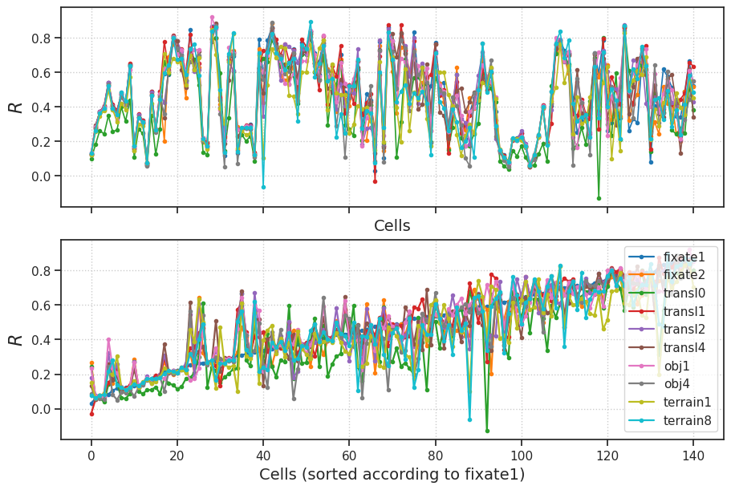
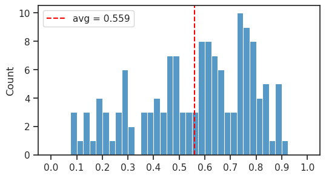
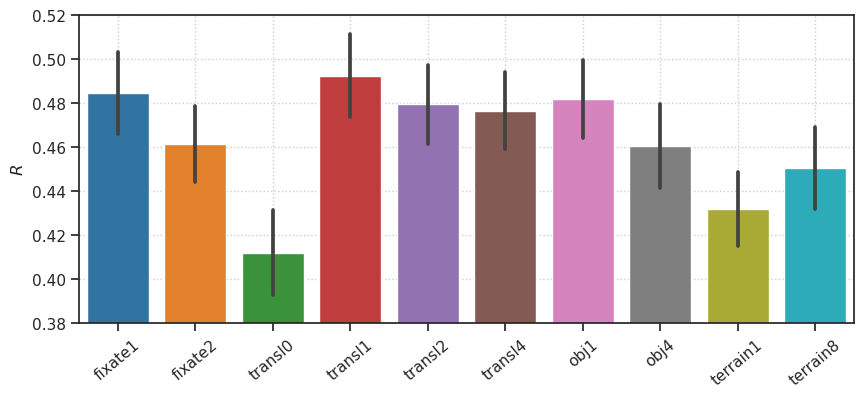
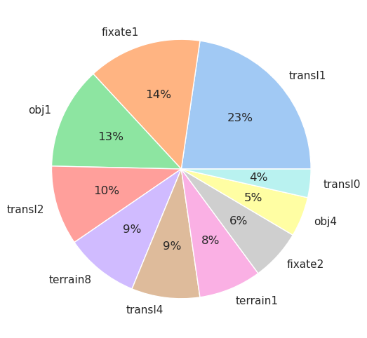
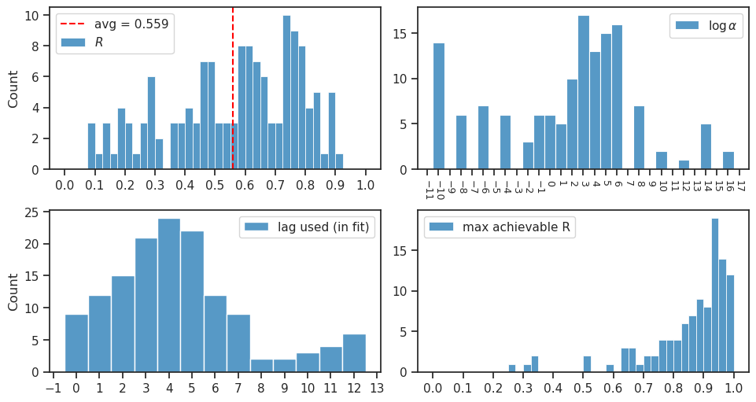

(26) Combine fits#
Motivation: …across different sim categories
Show code cell source
# HIDE CODE
import os, sys
from IPython.display import display
# tmp & extras dir
git_dir = os.path.join(os.environ['HOME'], 'Dropbox/git')
extras_dir = os.path.join(git_dir, 'jb-MTMST/_extras')
fig_base_dir = os.path.join(git_dir, 'jb-MTMST/figs')
tmp_dir = os.path.join(git_dir, 'jb-MTMST/tmp')
# GitHub
sys.path.insert(0, os.path.join(git_dir, '_MTMST'))
from vae.train_vae import TrainerVAE, ConfigTrainVAE
from vae.vae2d import VAE, ConfigVAE
from figures.fighelper import *
from analysis.glm import *
# warnings, tqdm, & style
warnings.filterwarnings('ignore', category=DeprecationWarning)
from rich.jupyter import print
%matplotlib inline
set_style()
TODO: when training finished#
Compare this local fit to fixate 2 that was imported from sigur. Which one is better? If the local one is better, run below readout.
escape_parenthesis('fixate2_k-32_z-20x[3,6,12]_enc(1x3)-dec(1x2)-pre(1x3)-post(1x3)/ep160-b600-lr(0.002)_beta(0.15:0x0.5)_lamb(0.0001)_gr(250.0)_(2023_04_26,23:01)')
fixate2_k-32_z-20x[3,6,12]_enc\(1x3\)-dec\(1x2\)-pre\(1x3\)-post\(1x3\)
ep160-b600-lr\(0.002\)_beta\(0.15:0x0.5\)_lamb\(0.0001\)_gr\(250.0\)_\(2023_04_26,23:01\)
Copy fits to tmp dir#
fits = [
'fixate1_nf-420_(2023_04_27,20:20)',
'fixate2_nf-420_(2023_04_27,13:57)',
'transl0_nf-70_(2023_04_27,13:30)',
'transl1_nf-420_(2023_04_27,13:00)',
'transl2_nf-420_(2023_04_27,19:16)',
'transl4_nf-420_(2023_04_27,07:52)',
'Medium_obj1_nf-280_(2023_04_26,15:53)',
'obj4_nf-280_(2023_04_26,18:21)',
'terrain1_nf-210_(2023_04_27,12:50)',
'terrain8_nf-420_(2023_04_26,22:51)',
# TODO: fixate4,
]
copy_fits(fits, pjoin(tmp_dir, 'results_combined'))
Load & analyze#
df = []
perf = {}
for fit_name in fits:
_df = f"summary_{fit_name}.df"
_df = pjoin(tmp_dir, 'results_combined', _df)
_df = pd.read_pickle(_df)
k = _df['category'].unique().item()
perf[k] = _df.perf.values
df.append(_df)
df = pd.concat(df)
print({k: len(v) for k, v in perf.items()})
{ 'fixate1': 141, 'fixate2': 141, 'transl0': 141, 'transl1': 141, 'transl2': 141, 'transl4': 141, 'obj1': 141, 'obj4': 141, 'terrain1': 141, 'terrain8': 141 }
sorted_data = sorted(
zip(*(v for v in perf.values())),
key=lambda x: x[0],
)
sorted_data = tuple(zip(*sorted_data))
fig, axes = create_figure(2, 1, (9, 6), 'all', layout='constrained')
for k, v in perf.items():
axes[0].plot(v, marker='.', lw=1.2, label=k)
axes[0].set_xlabel('Cells', fontsize=14)
for k, v in zip(perf, sorted_data):
axes[1].plot(v, marker='.', lw=1.6, label=k)
axes[1].set_xlabel('Cells (sorted according to fixate1)', fontsize=14)
axes[1].legend()
for ax in axes.flat:
ax.set_ylabel(r'$R$', fontsize=16)
ax.grid()
plt.show()

x = np.stack([v for v in perf.values()])
counts = collections.Counter(np.argmax(x, axis=0))
counts = {
list(perf)[i]: c for i, c
in counts.most_common()
}
counts = {
k: counts.get(k, 0) for k
in list(counts) + list(perf)
}
percent = {
k: np.round(100 * v / sum(counts.values()), 1)
for k, v in counts.items()
}
print(percent)
{ 'transl1': 22.7, 'fixate1': 14.2, 'obj1': 12.8, 'transl2': 9.9, 'terrain8': 9.2, 'transl4': 8.5, 'terrain1': 7.8, 'fixate2': 6.4, 'obj4': 5.0, 'transl0': 3.5 }
best = x.max(0)
x = best.mean()
x
0.5589450858078276
fig, ax = create_figure(1, 1, (6, 3.2))
sns.histplot(best, bins=np.linspace(0, 1, 41), ax=ax)
ax.axvline(x, color='r', ls='--', label=f"avg = {x:0.3f}")
ax.locator_params(axis='x', nbins=11)
ax.legend()
plt.show()

100 * (559 - 251) / 251
122.70916334661355
More plots#
fig, ax = create_figure(1, 1, (10, 4))
sns.barplot(data=df, x='category', y='perf', errorbar='se', ax=ax)
ax.set(xlabel='', ylabel=r'$R$', ylim=(0.38, 0.52))
ax.tick_params(axis='x', rotation=40)
ax.grid()
plt.show()

Get df best#
df_best = collections.defaultdict(list)
for expt in df['expt'].unique():
_df1 = df.loc[df['expt'] == expt]
for cell in _df1['cell'].unique():
_df2 = _df1.loc[_df1['cell'] == cell]
best_i = _df2['perf'].argmax()
best = dict(_df2.iloc[best_i])
best['perf_best'] = best.pop('perf')
best['perf_mu'] = _df2['perf'].mean()
best['perf_sd'] = _df2['perf'].std()
for k, v in best.items():
df_best[k].append(v)
df_best = pd.DataFrame(df_best)
df_best
| category | nf | root | expt | cell | max_perf | log_alpha | best_lag | perf_best | perf_mu | perf_sd | |
|---|---|---|---|---|---|---|---|---|---|---|---|
| 0 | obj1 | 280 | YUWEI | clu036 | 0 | NaN | 5.0 | 5 | 0.136978 | 0.124710 | 0.010827 |
| 1 | transl4 | 420 | YUWEI | clu037 | 0 | NaN | 2.0 | 4 | 0.295079 | 0.268079 | 0.032203 |
| 2 | fixate1 | 420 | YUWEI | clu038 | 0 | NaN | 3.0 | 0 | 0.374930 | 0.356659 | 0.033544 |
| 3 | transl1 | 420 | YUWEI | clu039 | 0 | NaN | 3.0 | 1 | 0.407124 | 0.379822 | 0.048944 |
| 4 | transl2 | 420 | YUWEI | clu040 | 0 | NaN | -10.0 | 3 | 0.542245 | 0.509416 | 0.057991 |
| ... | ... | ... | ... | ... | ... | ... | ... | ... | ... | ... | ... |
| 136 | terrain1 | 210 | YUWEI | ytu029 | 19 | 0.941254 | 1.0 | 3 | 0.481060 | 0.370724 | 0.076897 |
| 137 | transl1 | 420 | YUWEI | ytu029 | 20 | 0.958395 | 3.0 | 5 | 0.444701 | 0.270336 | 0.096081 |
| 138 | fixate2 | 420 | YUWEI | ytu029 | 21 | 0.846710 | -2.0 | 1 | 0.492103 | 0.390104 | 0.079458 |
| 139 | fixate1 | 420 | YUWEI | ytu029 | 22 | 0.930033 | 2.0 | 8 | 0.665234 | 0.571026 | 0.070122 |
| 140 | transl1 | 420 | YUWEI | ytu029 | 23 | 0.946823 | 5.0 | 5 | 0.636418 | 0.486652 | 0.087582 |
141 rows × 11 columns
sorted_data = sorted(zip(
df_best['perf_best'],
df_best['perf_mu'],
df_best['perf_sd'],
), key=lambda x: x[0])
sorted_data = list(map(
lambda t: np.array(t),
zip(*sorted_data),
))
fig, ax = create_figure(1, 1, (10, 6))
ax.plot(sorted_data[0], lw=2.5, color='k', label='Best')
ax.plot(sorted_data[1], lw=1.2, color='C1', marker='.', label=r'$\mu$')
lower = sorted_data[1] - sorted_data[2]
higher = sorted_data[1] + sorted_data[2]
ax.plot(lower, lw=0.8, color='C0', label=r'$\mu - \sigma$')
ax.plot(higher, lw=0.8, color='C0', label=r'$\mu + \sigma$')
ax.fill_between(
x=range(len(df_best)),
y1=lower,
y2=higher,
color='C0',
alpha=0.1,
)
ax.set_xlabel('Cells (sorted according to max)', fontsize=14)
ax.set_ylabel(r'$R$', fontsize=16)
ax.legend()
ax.grid()
plt.show()

df_best.iloc[inds[:10]]
| category | nf | root | expt | cell | max_perf | log_alpha | best_lag | perf_best | perf_mu | perf_sd | |
|---|---|---|---|---|---|---|---|---|---|---|---|
| 118 | obj1 | 280 | YUWEI | ytu028 | 8 | 0.328052 | 12.0 | 10 | 0.718525 | 0.399699 | 0.228919 |
| 79 | transl1 | 420 | YUWEI | clu292 | 2 | 0.805540 | 4.0 | 10 | 0.587479 | 0.305260 | 0.154100 |
| 40 | transl1 | 420 | YUWEI | clu183 | 0 | 0.927126 | 3.0 | 7 | 0.725815 | 0.444699 | 0.253287 |
| 17 | transl1 | 420 | YUWEI | clu088 | 0 | 0.646108 | 8.0 | 4 | 0.778417 | 0.528384 | 0.186210 |
| 71 | transl4 | 420 | YUWEI | clu267 | 6 | 0.880980 | 1.0 | 5 | 0.689412 | 0.447823 | 0.150396 |
| 113 | transl4 | 420 | YUWEI | clu295 | 11 | 0.891785 | 14.0 | 11 | 0.615207 | 0.377185 | 0.160740 |
| 86 | transl4 | 420 | YUWEI | clu293 | 1 | 0.887323 | -4.0 | 10 | 0.510461 | 0.281390 | 0.108245 |
| 72 | transl1 | 420 | YUWEI | clu267 | 7 | 0.955361 | 2.0 | 5 | 0.876347 | 0.652552 | 0.236587 |
| 83 | terrain1 | 210 | YUWEI | clu292 | 12 | 0.770807 | 1.0 | 12 | 0.470403 | 0.249841 | 0.097090 |
| 120 | fixate2 | 420 | YUWEI | ytu029 | 0 | 0.331085 | 4.0 | 1 | 0.642557 | 0.426674 | 0.153278 |
df_best.iloc[df_best['perf_best'].argsort()[::-1][:10]]
| category | nf | root | expt | cell | max_perf | log_alpha | best_lag | perf_best | perf_mu | perf_sd | |
|---|---|---|---|---|---|---|---|---|---|---|---|
| 28 | obj1 | 280 | YUWEI | clu116 | 0 | 0.835483 | 16.0 | 0 | 0.923867 | 0.833675 | 0.045101 |
| 51 | terrain8 | 420 | YUWEI | clu221 | 3 | 0.900849 | -10.0 | 6 | 0.893667 | 0.829131 | 0.034021 |
| 42 | obj4 | 280 | YUWEI | clu209 | 1 | 0.923722 | 8.0 | 5 | 0.888635 | 0.836093 | 0.046829 |
| 29 | transl4 | 420 | YUWEI | clu120 | 0 | 0.967720 | 3.0 | 3 | 0.883813 | 0.838387 | 0.055588 |
| 72 | transl1 | 420 | YUWEI | clu267 | 7 | 0.955361 | 2.0 | 5 | 0.876347 | 0.652552 | 0.236587 |
| 69 | transl1 | 420 | YUWEI | clu267 | 4 | 0.979806 | 2.0 | 5 | 0.876143 | 0.817082 | 0.042463 |
| 124 | transl2 | 420 | YUWEI | ytu029 | 4 | 0.935583 | -8.0 | 3 | 0.873508 | 0.856746 | 0.016747 |
| 23 | fixate1 | 420 | YUWEI | clu104 | 0 | 0.980831 | 0.0 | 4 | 0.845799 | 0.735943 | 0.056409 |
| 109 | terrain8 | 420 | YUWEI | clu295 | 4 | 0.929612 | 5.0 | 5 | 0.836597 | 0.779707 | 0.025680 |
| 75 | fixate1 | 420 | YUWEI | clu267 | 11 | 0.850368 | -10.0 | 6 | 0.835265 | 0.676980 | 0.126413 |
Pie chart#
labels, vals = zip(*collections.Counter(
df_best['category']).most_common())
vals = [100 * e / sum(vals) for e in vals]
fig, ax = create_figure(1, 1, (8, 6))
ax.pie(
x=vals,
labels=labels,
colors=sns.color_palette('pastel')[:len(labels)],
autopct='%.0f%%',
)
plt.show()

Summary of results#
show_neural_results(df_best, 'perf_best');
